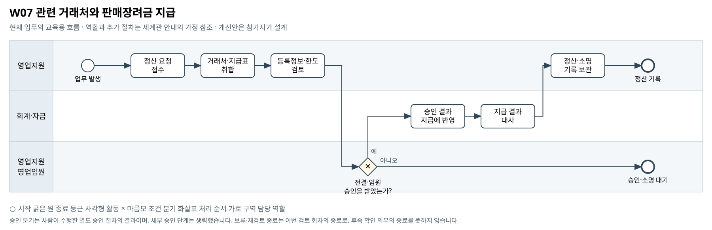

관련 거래처와 판매장려금 지급
이름이 다른 거래처의 지급을 별도로 검토할 때 관련자 합산과 소명 확인은 어디에서 이루어져야 하는가?
BPMN 2.0 편집 원본 · 도식 크게 보기 · 8개 도식집 PDF


승인 분기는 사람이 수행한 별도 승인 절차의 결과이며, 세부 승인 단계는 생략했습니다. 보류·재검토 종료는 이번 검토 회차의 종료로, 후속 확인 의무의 종료를 뜻하지 않습니다.
기존 자료의 단초
- 대리점 마스터와 판매장려금 지급 자료, 실제 회수계좌 자료가 제공된다.
- 동일 관련자는 대표자·주소·정산계좌 중 두 개 이상 일치하는 관계를 전이적으로 연결해 판단하도록 정의돼 있다.
- 판매장려금은 거래처별 월 2백만원 이하 영업지원팀 전결, 초과 영업임원 승인이다. 동일 관련자는 합산해 한도를 적용한다.
- 일부 등록 정보가 겹치는 정황은 추가 소명·감사 대상이며 부정 확정과 동일하지 않다.
주최 측의 교육용 업무 가정
- [교육용 가정] 영업지원이 정산 자료를 모아 관계·한도를 검토하고 승인 후 회계가 지급·대사하는 수작업 흐름이다.
- [교육용 가정] 원본의 회수계좌를 지급계좌로 단정하지 않는다. 실제 지급 실행·은행 회신은 별도 보완 자료로 다룬다.
- [범위] 의심 거래의 부정 여부나 일괄 지급중단을 정답으로 정하지 않는다. 여기 나열한 보완 항목은 선택 예시다. 필수 확장과 다른 부서 영향의 기준은 A01을 따른다.
미해결 지점
- 승인 당시의 마스터 변경 이력과 소명 증빙이 없다.
- 관련자 그룹별 월 지급액이 어느 승인 요청에 반영됐는지 이력이 없다.
- 실제 지급 수취계좌·은행 처리결과와 회수계좌를 구분한 자료가 부족하다.
확장할 때 생각할 질문
- 관련자 합산을 놓치는 원인이 자료 분산인지 승인 단위인지 어떻게 확인할 것인가?
- 공유 주소·계좌가 정당한 사유를 가진 경우 어떤 증빙을 요청할 것인가?
- 정보 정정 후 기존 승인과 지급 예정 건을 어디까지 재검토할 것인가?
보완할 수 있는 데이터
- 마스터 변경·소명 요청·답변 이력
- 관련자 합산액이 명시된 승인 신청·회신
- 지급 수취계좌·처리결과·반려사유
관련 원본 자료
- 00_common/Business_Process_Map.md
- 00_common/data_dictionary.md
- 00_common/approval_authority_policy.md
- 01_corevia/master/m_agency_cv.csv
- 01_corevia/sales/sales_rebate_payment_cv.csv
- 01_corevia/financials/fin_collection_history_cv.csv
그림의 관계가 원본 파일의 모든 연결키 제공을 뜻하지는 않습니다. 원본에서 확인한 관계와 추가한 매핑·가정을 구분하십시오.